왜 리뷰가 더 중요해졌나
AI(Artificial Intelligence) 에이전트에게 일을 맡기면 코드를 잔뜩 쓰고 "다 됐어요"라고 해요. 그런데 막상 써 보면 부탁한 것 중 빠진 게 많아요. 영상 첫 화면이 이 차이를 보여 줘요. 왼쪽 Said 열은 다섯 줄 모두 초록 체크인데, 오른쪽 Did 열에서는 두 번째 줄이 빨간 X이고 아래 두 줄은 비어 있어요.
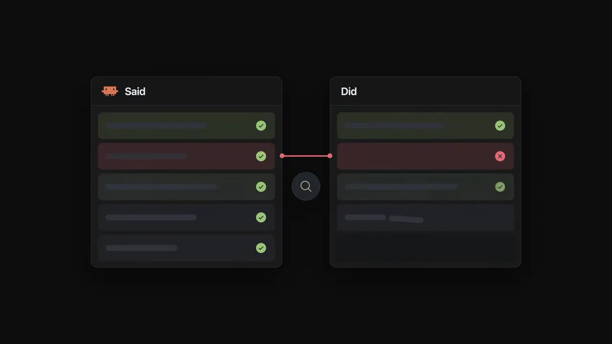
리뷰할 양이 열 배 넘게 늘었어요
모델이 좋아지면서 기능 목록을 통째로 주고 몇 시간 뒤에 돌아오는 식으로 일할 수 있게 됐어요. 문제는 만들어지는 양만큼 리뷰할 양도 는다는 거예요. 영상이 띄운 블로그 문단에 숫자가 있어요. Anthropic 모노레포에 하루에 들어오는 변경이 5월 약 2,500건에서 9월 30,000건 이상으로 늘었어요.
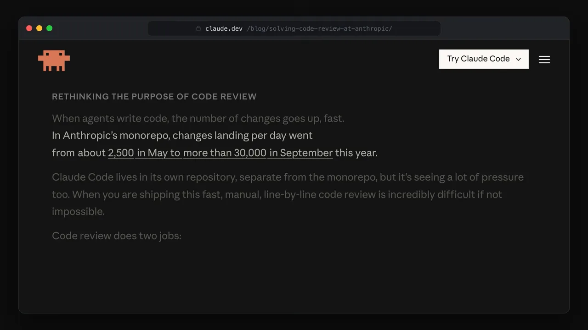
그래도 리뷰를 건너뛸 수는 없어요. 검사 없이 실수가 실제 사용자에게 닿으면, 리뷰 시간에 더해 버그를 고치는 시간까지 들어요. 서둘러 넘긴 시간은 줄어드는 게 아니라 더 비싼 나중으로 밀릴 뿐이에요. 아래 화면처럼 Build와 Ship 사이의 Review는 빠질 수 없는 칸이고, 진짜 질문은 '누가 하느냐'예요.
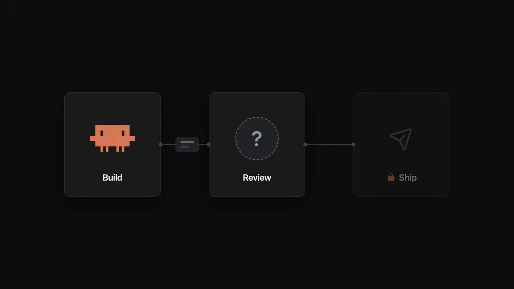
팀이 바꾼 두 가지
Claude Code 팀은 먼저 리뷰에서 묻는 질문을 바꿨어요. "누가 코드를 읽었나?" 대신 "이 변경으로 무엇이 잘못될 수 있고, 그걸 어떻게 잡나?"를 물어요. 그러면 관심이 코드 줄이 아니라 만드는 기능이 어떻게 동작해야 하는지로 옮겨 가요.
검사 시점도 바꿨어요. 끝에서 한 번 하는 대신, Claude가 만드는 동안 계속 검사해요. 사람이 변경을 볼 때쯤엔 이미 한 번 이상 검사하고 고친 상태라, 사람은 가장 깨지기 쉬운 부분에 시간을 쓰면 돼요. 영상의 나머지는 그 부분을 어떻게 고르고 검사하는지예요. 채널이 만든 워크플로 전체를 한 장으로 그리면 이래요.
flowchart LR R["위험도 매기기
낮음·중간·높음"] --> W["write-evals
eval·목업 작성"] W --> H{"사람이 승인"} H --> L["review-loop
빌더→검증자→리뷰어"] L --> F["first-time-user
처음 쓰는 사람 테스트"] F --> B["fix-a-bug
재현·원인·되돌리기"] L -. "반복되는 실수" .-> M["review.md
Learned rules"] M -.-> L
1단계: 기능마다 eval부터 쓰기
Claude가 만드는 중에 돌리는 검사는 작아요. 앱이 예상대로 쓸 때만이 아니라 사람들이 여러 방식으로 써도 버티는지 보려면 더 깊은 검사가 필요해요. 그래서 팀 방식의 첫 단계가 Deeper checks예요.
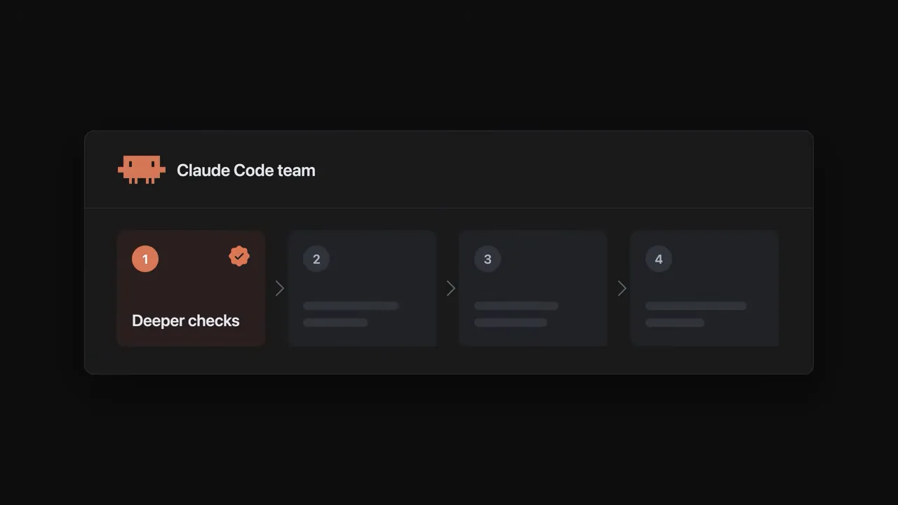
팀은 변경을 내보내기 전에 Claude에게 "됐어요"라는 말 대신 동작한다는 증거를 보여 달라고 해요. 앱의 테스트 결과나 디자인과 비교한 스크린샷 같은 거예요. 블로그 화면에서 주황색으로 칠한 이름이 Claude Code를 만든 Boris Cherny예요. 그는 Claude에게 자기 작업을 검증할 방법을 주는 게 좋은 결과를 얻는 데 아마 가장 중요하다고 했어요.
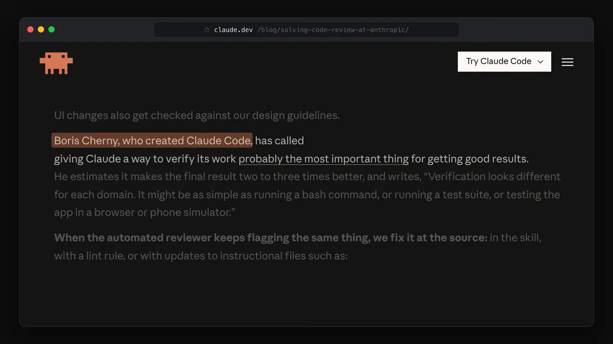
팀의 조언은 에이전트에게 돌릴 수 있는 검사 목록을 주라는 거예요. 그 검사 하나하나가 eval이에요. 아래 화면에서 eval 카드 옆의 자물쇠는 '고정된 기준'이라는 뜻이고, 그 기준을 통과해야 아래 Checkout 창에 done이 붙어요.
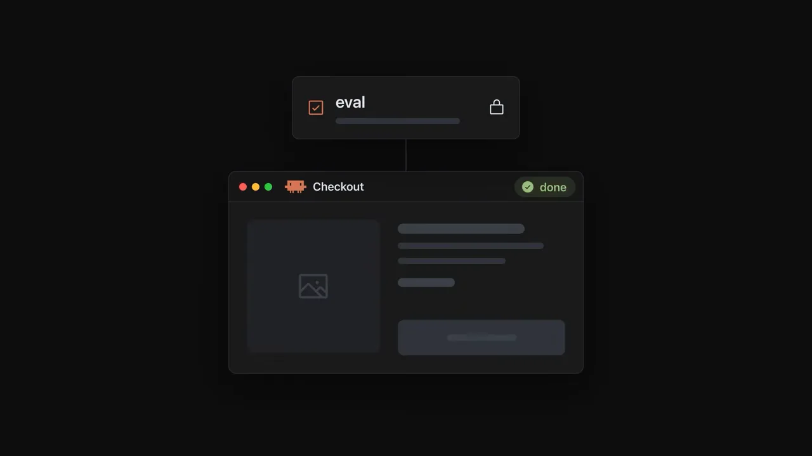
write-evals 스킬 만들기
채널은 팀의 방식을 스킬로 옮겼어요. 데모 앱에는 specs/features/ 폴더가 있고, 기능마다 fr-01, fr-02처럼 기능 이름을 붙인 폴더가 있어요. 각 폴더 안의 rd.md가 그 기능의 요구사항 문서예요. 오른쪽 편집기에 열린 것이 FR-01(계정 가입·로그인·로그아웃)의 문서이고, 우선순위·상태·경로·관련 코드 파일이 표로 정리돼 있어요.
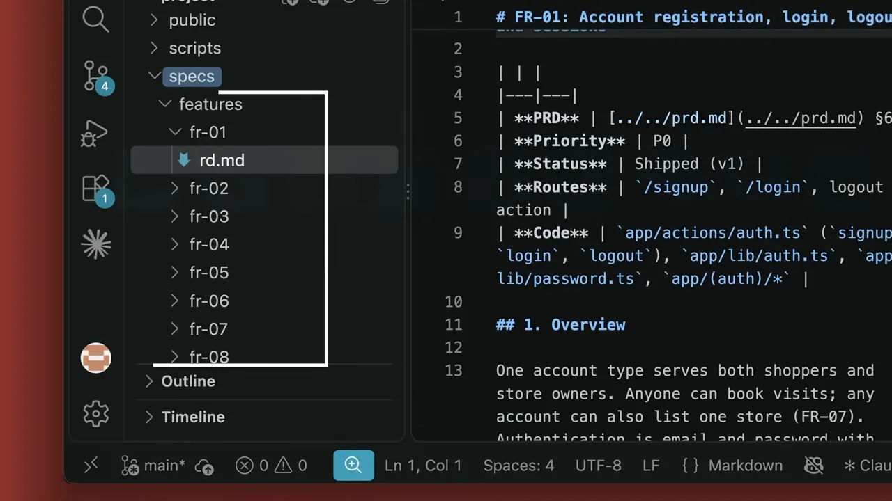
Claude에게 준 프롬프트에서 강조된 부분이 스킬의 요구사항이에요. write-evals라는 스킬을 만들어 기능마다 eval.md로 바꾸고, 그 안에 에이전트가 확인할 수 있는 구체적인 방법을 담으라는 거예요. 디자인이 있는 기능은 HTML(HyperText Markup Language) 목업을 만들어 옆에 저장하고, 그걸 디자인 기준으로 삼으라고 했어요.
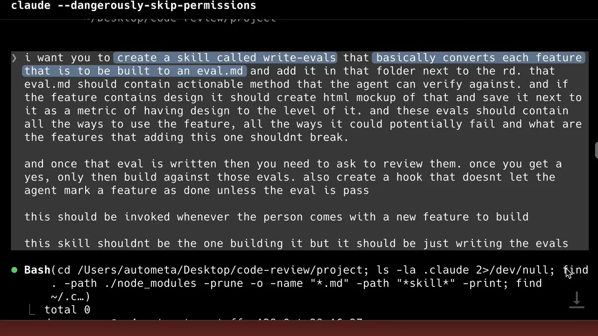
프롬프트 뒷부분에는 규칙이 두 개 더 있어요. eval을 다 쓰면 사람에게 리뷰를 받아야 하고, 승인 전에는 아무것도 만들지 않아요. 그리고 eval이 통과하기 전에는 기능을 완료로 표시하지 못하게 막는 훅을 만들어요. 이 스킬은 만드는 쪽이 아니라 eval을 쓰는 쪽만 맡아요.
Claude는 .claude 폴더 안에 스킬을 만들어요. 아래 탐색기에서 skills/write-evals 안에 SKILL.md와 template.md가 보여요. template.md는 모든 eval 파일이 같은 구조를 갖게 하는 틀이에요. 같은 화면 위쪽의 hooks, agents 폴더와 다른 스킬 폴더(first-time-user, fix-a-bug, review-loop)는 뒤에서 만드는 것들이에요.
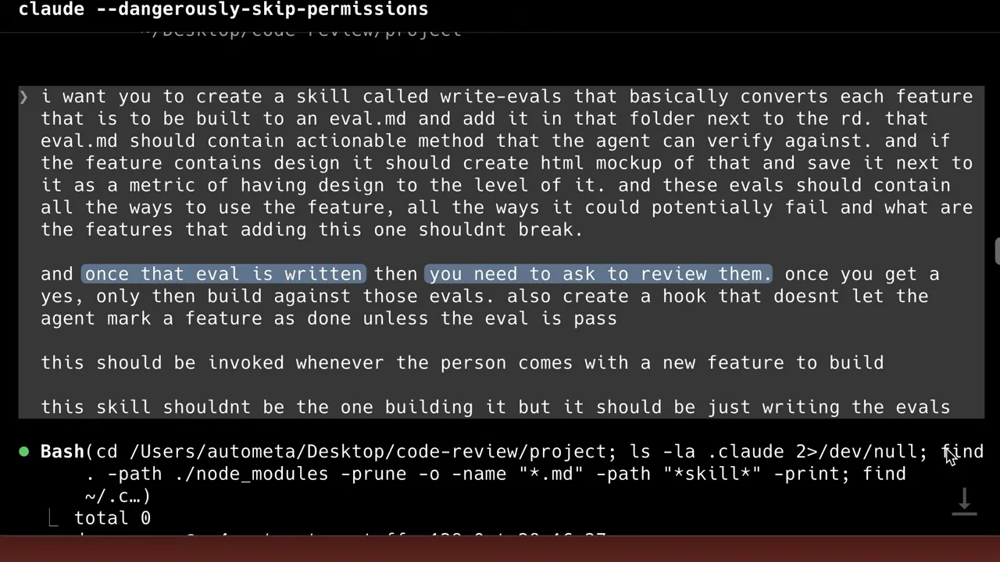
실행하면 이렇게 흘러가요
- 새 기능마다 스킬부터 실행해요 — 그 기능 폴더를 열고 요구사항 문서와 eval 파일을 써요.
- 훅으로 형식을 검사해요 — eval이 제대로 쓰였는지 여러 번 오가며 확인하고, 볼 수 있는 목업을 만들어요.
- 상태를 Draft에서 In review로 바꿔요 — 혼자 내린 결정을 모두 알려 주고 확인할 파일을 열어 줘요. 사람이 eval과 목업을 보고 승인하면 '리뷰 완료, 만들 준비 됨'으로 바뀌어요
아래 터미널에서 흰 상자로 둘러싼 두 줄이 그 순간이에요. FR-11의 eval.md에서 Eval status가 Draft에서 In review로 바뀌었고, 바로 아래에서 훅(eval-gate.mjs lint)이 'FR-11 eval is well formed'라고 확인해요.
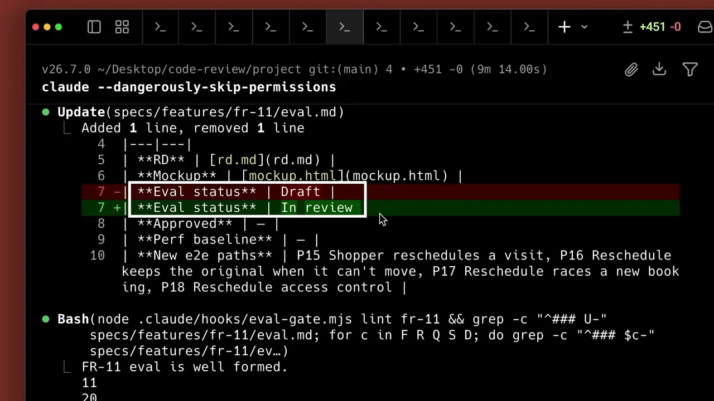
목업은 예약 변경 기능(Pick a new time) 화면이에요. 왼쪽은 정상 상태, 오른쪽은 고른 시간이 이미 찬 상태로, 빨간 안내 문구가 떠 있어요. 이렇게 앱이 놓일 수 있는 다른 상태 화면과 모바일 화면까지 같이 보여 줘서, 작은 화면 배치도 미리 확인할 수 있어요.
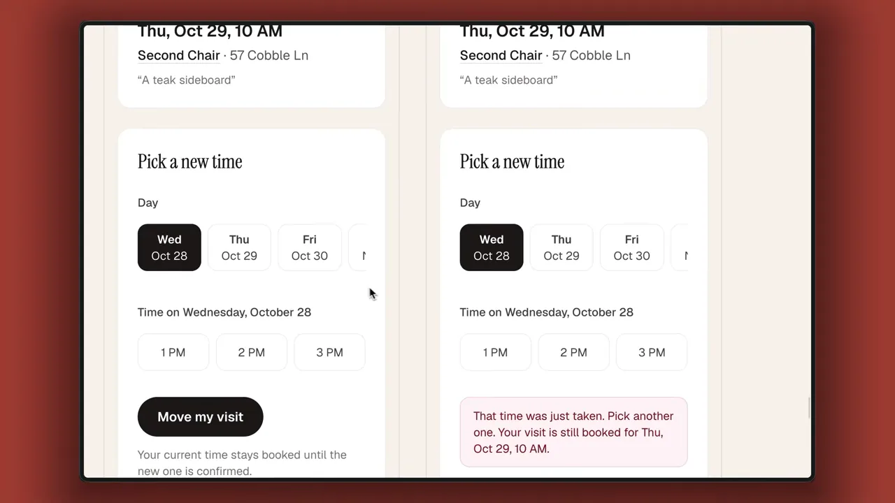
2단계: 다른 리뷰어와 review.md
eval대로 기능을 만든 뒤에도 리뷰는 필요해요. 그런데 리뷰를 만든 에이전트에게 맡기면 안 돼요. 그 에이전트가 변경의 모든 결정을 직접 내렸기 때문에, 결국 자기 생각에 동의해 버려요. 그래서 팀의 두 번째 검사는 별도의 리뷰어 에이전트예요. 아래 그림처럼 변경(Changes)은 리뷰어를 먼저 거치고, 사람(You)에게는 그다음에 가요.
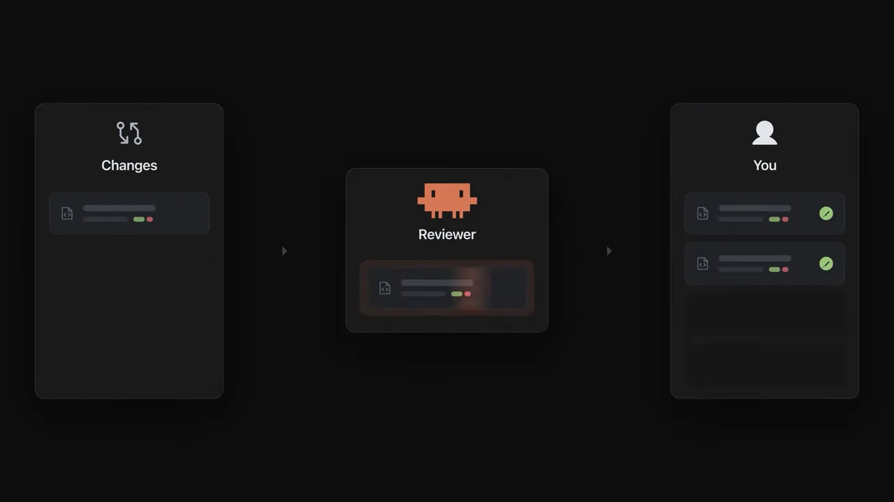
요금제에 따라 쓸 수 있는 것
팀이 쓰는 리뷰 에이전트는 지금 Team과 Enterprise 요금제에서만 쓸 수 있어요. 화면에서 Pro와 Max 카드는 흐리게, Team과 Enterprise 카드에만 'Review agent' 배지가 붙어 있어요.
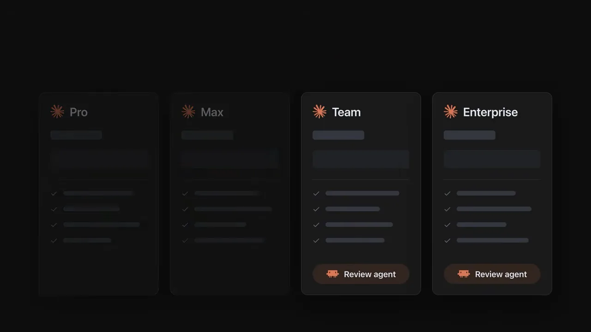
더 가벼운 버전은 Claude Code에 /code-review 명령으로 들어 있어요. 실행하면 별도 에이전트가 바뀐 부분을 모두 읽고, 앱을 깨뜨릴 실수를 보고해요. 화면 위쪽의 'effort max'가 검사 깊이예요. 오른쪽 Findings 패널에 찾은 문제 네 건이 모여요.
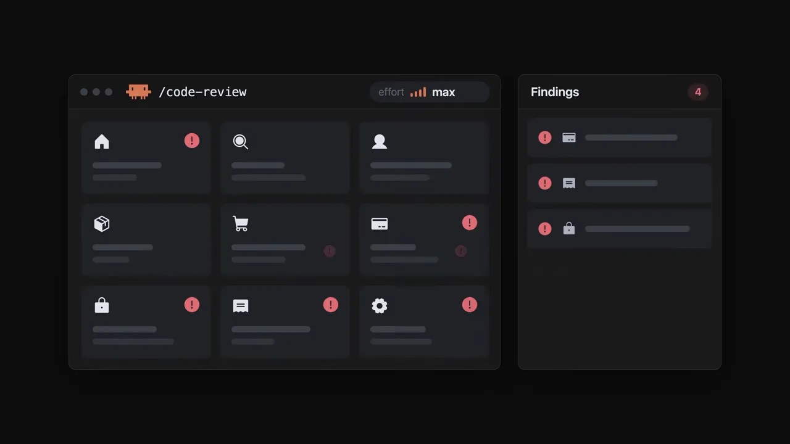
review.md로 기준을 적어 두기
명령에게 내 앱에서 무엇이 중요한지 알려 주려면, Anthropic 글이 권하는 대로 review.md에 규칙을 적어요. 다만 이 파일은 따로 시키지 않으면 읽히지 않아요. 그래서 CLAUDE.md에 내용을 직접 붙이지 않고, 따로 둔 review.md를 CLAUDE.md 안에서 링크해요. 아래 그림의 왼쪽 위 CLAUDE.md 맨 아래 줄 @REVIEW.md가 그 링크이고, 점선이 오른쪽 REVIEW.md로 이어져요.
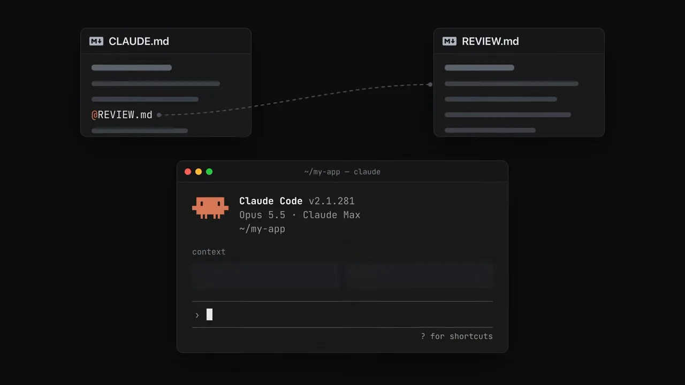
이 파일에는 앱에서 무엇이 진짜 실패인지와 각 문제가 얼마나 심각한지를 적어요. 화면 예시의 'What counts as a failure' 아래에는 세 줄이 있어요. 결제가 깨지면 high, 가격이 틀리게 나오면 medium, 버튼이 어긋나면 low예요.
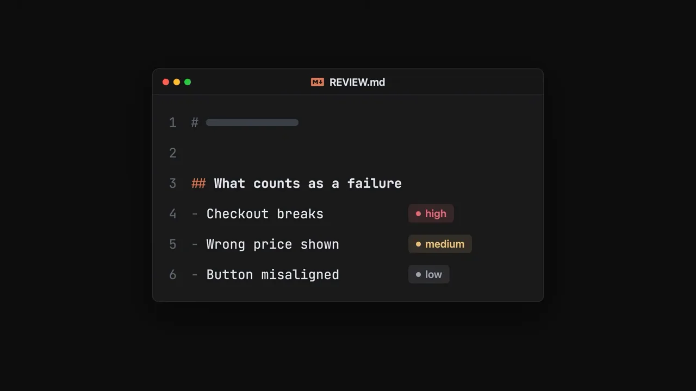
그 밖에 담을 내용은 이래요.
- 무엇을 무시할지
- 리뷰 결과를 어떻게 보고할지
- 앱을 어떤 방법들로 테스트할지
이 파일도 Claude에게 만들어 달라고 하면 돼요. 그러면 프로젝트 루트에 review.md가 생겨요. 화면 오른쪽 첫 문단은 이 앱에서 변경을 리뷰하는 법, 즉 무엇이 진짜 실패이고 얼마나 심각하며, 무엇을 놔두고, 실제 브라우저에서 어떻게 증명할지를 다룬다고 소개해요.
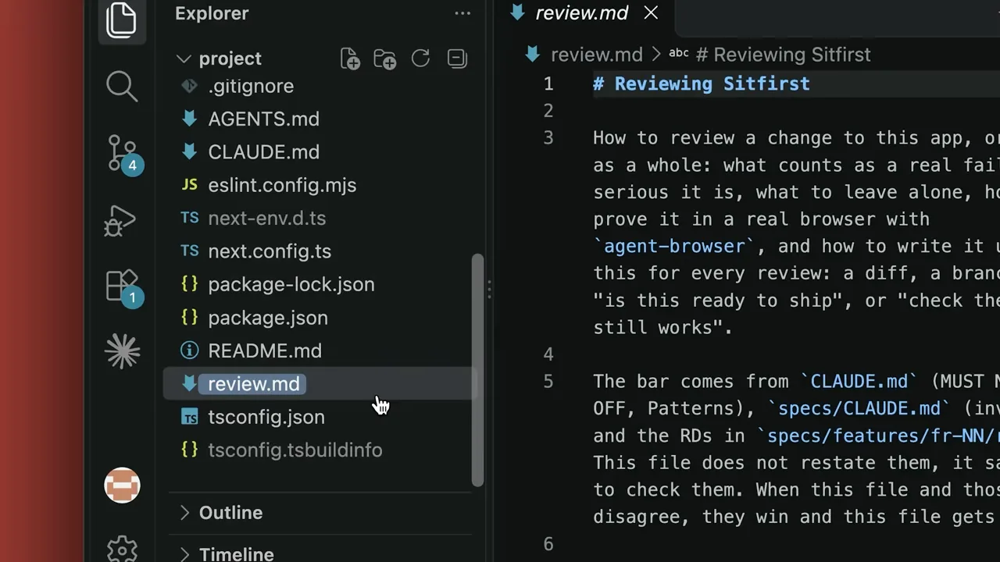
CLAUDE.md에서 링크했으니 /code-review도 읽어요.
영상 07:12에서 보기3단계: 만들고 검사하는 review-loop
리뷰 기준이 생겼으니, 다음은 기능을 만들고 리뷰하는 루프예요. Claude에게 review-loop 스킬을 만들어 달라고 하면서 두 가지를 요구해요. 기능을 만든 뒤 eval로 검사할 것, 그리고 새 컨텍스트 윈도우를 가진 서브에이전트를 쓸 것이에요. 서브에이전트는 메인 에이전트와 같은 맥락을 갖지 않으니, 메인 에이전트가 한 일에 그냥 동의하지 않아요. eval이 모두 통과할 때까지 계속 돌아요.
Claude는 스킬과 함께 에이전트 셋을 만들어요. 아래 화면의 'How it works' 문단이 구조를 요약해요. 메인 세션은 루프만 돌리고 앱 코드를 직접 쓰거나 판정하지 않아요. 매 라운드 새 서브에이전트를 띄워서, 각자 빈 컨텍스트에서 시작해요.
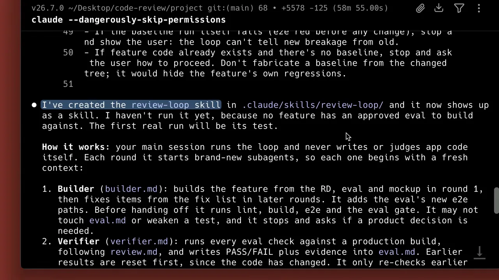
역할을 한 장으로 그리면 이래요. 오케스트레이터가 세 에이전트를 차례로 각자의 컨텍스트에서 띄우고, 빌더의 결과를 검증자와 리뷰어가 따로 봐요.
flowchart TD O["오케스트레이터 (메인 세션)
state.md에 라운드 기록"] --> B["빌더
rd.md·eval·목업으로 만들기"] B --> V["검증자
eval마다 통과·실패 표시"] B --> R["리뷰어
review.md 기준으로 eval이 놓친 것 찾기"] V --> D{"eval 모두 통과
+ 새 지적 없음?"} R --> D D -- "아니요: 고칠 목록" --> B D -- "예" --> E["루프 종료"] D -. "혼자 못 정하는 결정" .-> U["사람에게 진행 보고와 질문"]
| 역할 | 하는 일 |
|---|---|
| 오케스트레이터 | 루프를 돌리고 에이전트를 각자의 컨텍스트에서 띄워요 |
| 빌더 | write-evals가 쓴 요구사항 문서로 기능을 만들어요 |
| 검증자 | 같은 스킬의 eval로 앱을 검사하고, eval마다 통과·실패를 표시해요 |
| 리뷰어 | review.md 규칙으로 앱을 훑어 eval이 놓친 문제를 찾아요 |
돌려 보면
/review-loop에 만들 기능 이름을 붙여 실행하면, 먼저 루프 상태를 적는 state.md를 써요. 화면에서 강조된 Write 줄 아래 내용을 보면 'Current round: 1 · Phase: build'와 Round·Gate·Checks failing·Fixed·New 열이 있는 표가 있어요. 몇 라운드째인지, 무엇이 아직 실패인지 여기에 쌓여요.
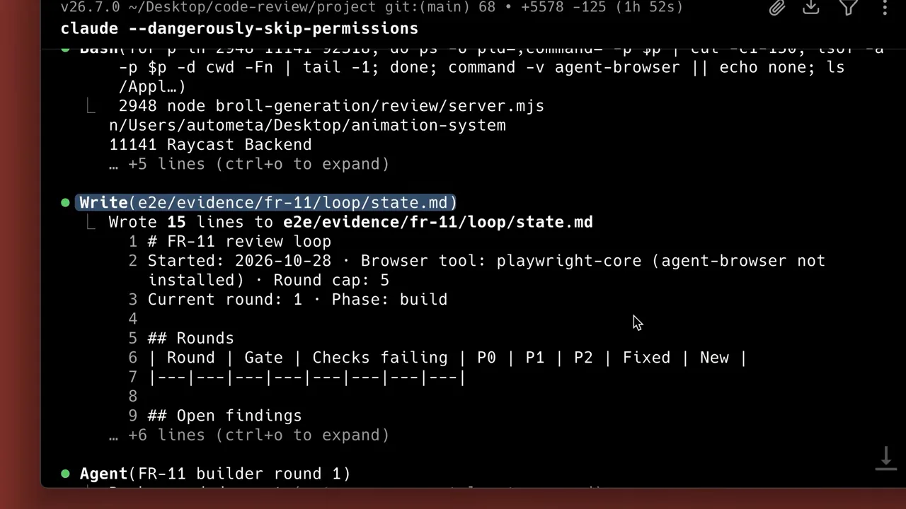
첫 라운드에서 빌더가 기능을 만드는 동안, write-evals의 훅이 메인 에이전트가 너무 일찍 완료라고 하지 못하게 막아요. 그다음 검증자와 리뷰어가 시작되고, 라운드마다 문제를 고쳐 가요. 혼자 정할 수 없는 결정을 만나면 진행 보고를 보여 주고 물어요. 아래 'Decisions for you'에는 네 가지 질문이 있어요. 린트 경고를 어디서 고칠지, 빌더가 새로 만든 proxy.ts를 유지할지, CLAUDE.md의 핵심 경로 수(14개 → 18개)를 고칠지, 관련 없는 변경을 따로 커밋할지예요.
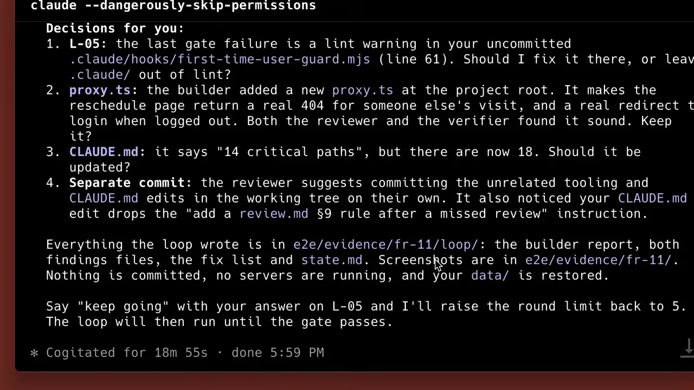
같은 실수는 규칙으로, 리뷰 강도는 위험도로
같은 실수를 규칙으로 막기
문제를 하나씩 고쳐도 다시 나와요. Claude는 이전 세션의 실수를 기억하지 못해서, 다음 기능에서 같은 실수를 또 하거든요. 그래서 Claude Code 팀은 리뷰어가 같은 실수를 계속 찾으면 Claude가 읽는 지시문을 고쳐요. 그러면 Claude가 그 실수를 멈춰요.
채널은 앞에서 만든 review.md로 같은 일을 해요. 파일 맨 아래에 'Learned rules' 칸을 두고, 시간이 지나며 배운 규칙을 쌓아요. 아래 화면 44~46행이 그 칸이에요. 왼쪽 브라우저에 'Something went wrong' 오류가 뜬 뒤, 46행 'Test an empty cart'가 새로 들어가요.
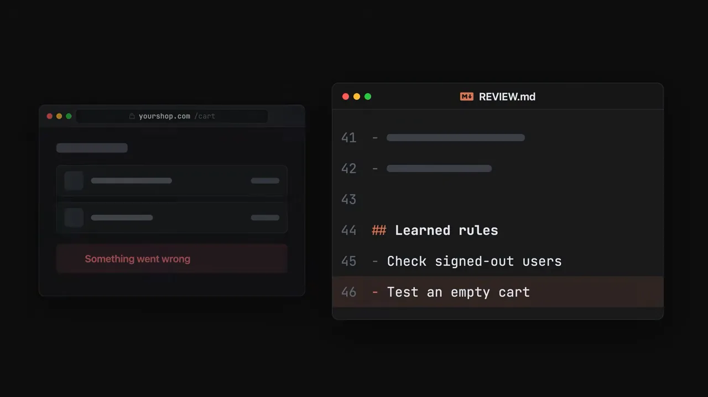
반대 경우에도 규칙을 넣어요. 리뷰가 진짜 문제가 아닌 걸 계속 지적할 때예요. 그러면 다음 리뷰는 같은 헛짚음을 반복하지 않아요. 이 기록은 review-loop가 대신 챙겨요. 뒤 라운드에서 같은 문제가 나오면 앞의 것과 짝지어 두었다가, 끝날 때 한 줄 규칙을 제안해요. 화면의 'Add to Learned rules?' 창에서 Yes를 눌러야만 들어가요. 오른쪽 타임라인(Jun 12, Aug 03, Oct 21)처럼 규칙은 날짜와 함께 쌓여요.
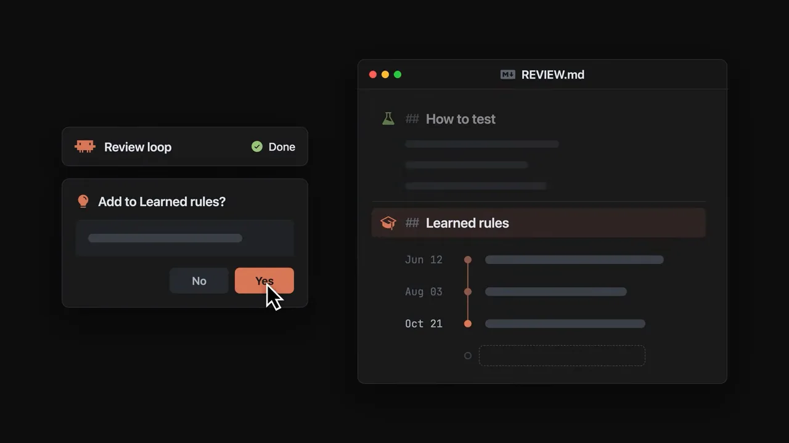
위험도에 따라 리뷰 강도를 정하기
모든 변경을 꼼꼼히 리뷰하면 시간과 사용량이 많이 들어요. 팀의 원칙은 블로그 화면에 강조된 'Blast radius sets the bar'예요. 그 기능에서 실수가 나면 피해가 클수록 더 세게 검사한다는 뜻이에요.
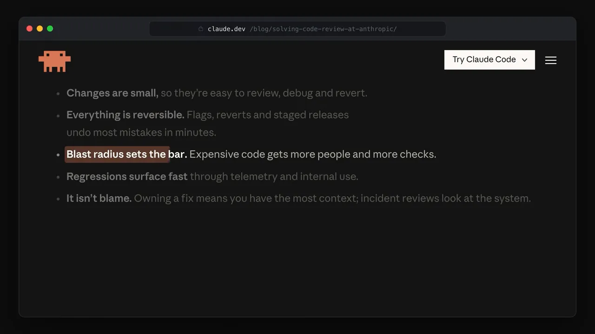
팀은 어떤 변경에 꼼꼼한 리뷰(Heavy review)를 할지 가벼운 리뷰(Light review)를 할지 직접 고르지 않아요. 분류기라는 에이전트가 모든 변경을 둘 중 한쪽으로 나눠요.
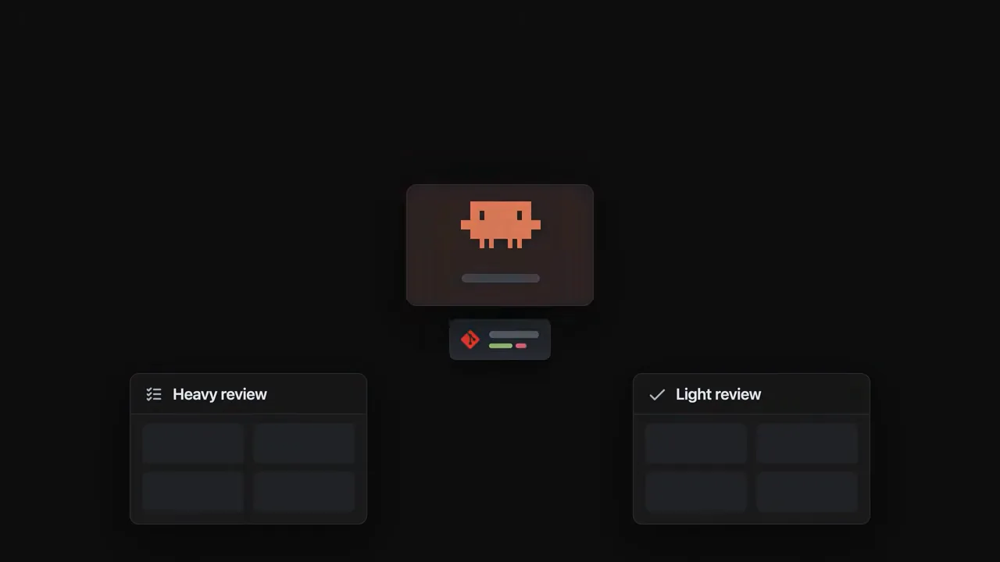
내 변경도 직접 나눌 수 있어요. 필요한 건 질문 하나예요.
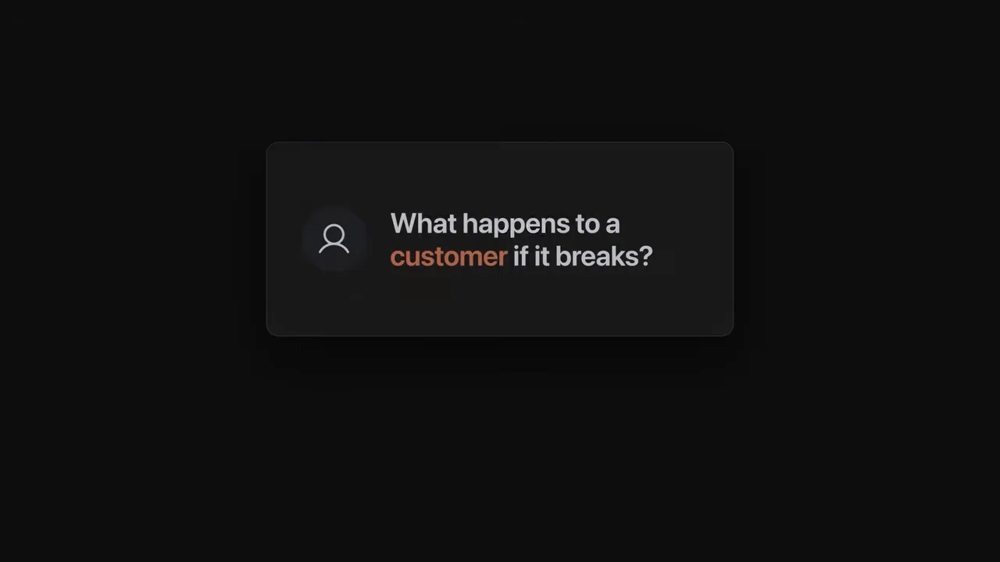
영상이 말한 세 등급을 그리면 이래요. 오른쪽으로 갈수록 되돌리기 어려워요.
이 질문도 스킬로 만들어 두면 기능마다 등급을 매겨 줘요. 기능을 만들기 전에 이 스킬로 낮음·중간·높음을 정하고, write-evals를 쓸 때 등급도 같이 넘겨요. 화면 아래 입력줄의 /write-evals checkout --risk high가 그 모습이에요. 결제처럼 위험이 높은 기능은 낮은 기능보다 엄격한 eval을 받아요.
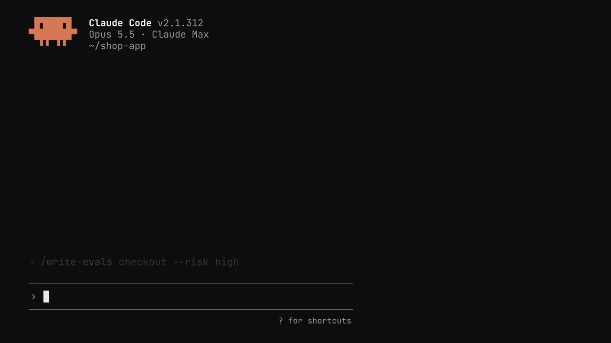
루프가 끝나지 않을 때 멈추는 규칙
꼼꼼한 리뷰가 필요한 변경에도 문제가 하나 더 있어요. 빌더와 리뷰어는 언제 멈춰야 할지 몰라서, 문제를 찾고 고치며 끝없이 오갈 수 있어요. Claude Code 팀에서는 한 변경이 50번 넘게 오간 적이 있었고, 누군가 손으로 루프를 멈출 때까지 계속됐어요.
팀이 리뷰어가 반복해서 보고한 것을 살펴보니, 약 59%는 첫 라운드부터 있던 문제였어요. 아래 막대에서 라운드(1~7)마다 주황 칸이 첫 라운드부터 있던 것, 회색 칸이 새로 찾은 것이에요. 라운드가 지나도 아래쪽 주황 칸이 거의 그대로 남아 있어요.
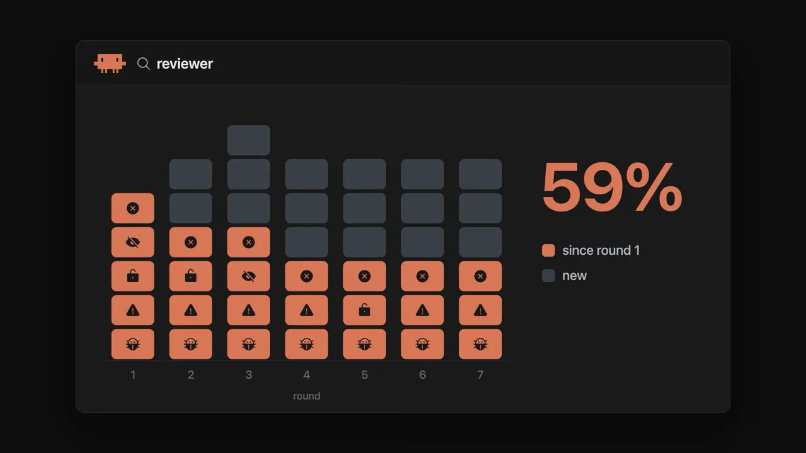
Anthropic 글에 대한 반응도 대부분 '토큰이 무제한일 때나 되는 얘기'라는 불만이었어요. 그래서 팀은 규칙 세 개를 더했어요.
규칙 1: 세 라운드가 지나면 방식을 다시 생각해요
세 라운드가 지나면 리뷰어는 문제를 더 늘어놓지 않아요. 대신 빌더에게 기능을 만드는 방식을 다시 생각하라고 해요. 화면에서 Round 3 배지 아래, 리뷰어가 빌더에게 'Rethink the approach'를 보내요. 고친 지 세 번이 지나도 실패한다면, 같은 방식으로 더 해 봐야 거기에 닿지 못한다는 판단이에요.
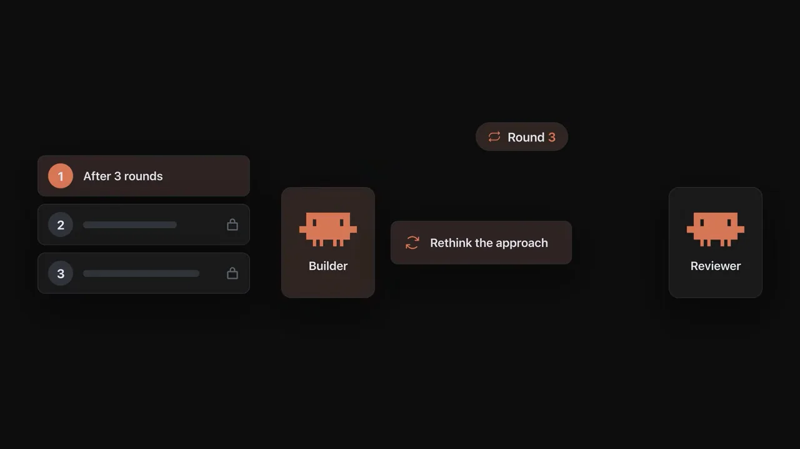
규칙 2: 바뀐 부분만 다시 봐요
첫 라운드가 끝나면 리뷰어는 마지막 수정이 바꾼 부분만 검사하고, 이미 보고한 것은 다시 보고하지 않아요. 화면의 Round 2 diff에서 리뷰어 표시는 새로 바뀐 줄에만 붙어 있어요.
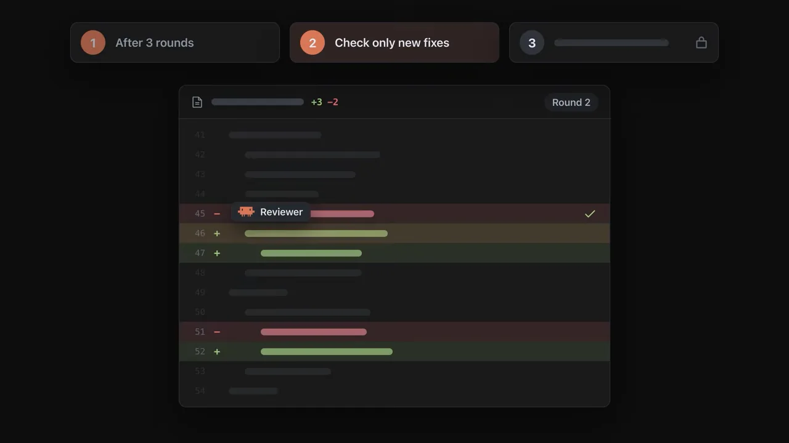
규칙 3: 문제의 종류를 말해요
리뷰어는 문제를 찾으면 그게 어떤 종류인지 말해요. 화면에서 리뷰어는 한 화면에서 'Missing loading state'(로딩 상태 없음)를 찾았어요. 그러자 빌더는 그 한 곳이 아니라 다른 화면의 같은 문제까지 고쳐요.
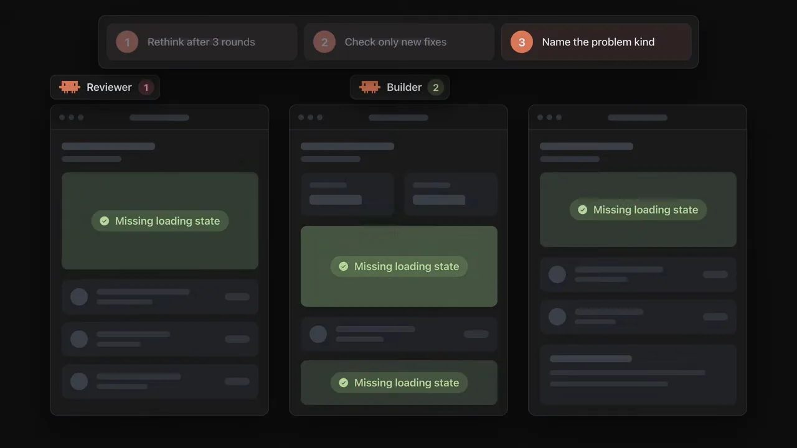
세 규칙을 둔 뒤로 팀은 첫 시도에 리뷰를 통과하는 변경이 늘었다고 해요. 채널의 루프도 같은 방식이지만, 한 라운드에서 하는 일이 더 많아서 숫자를 바꿨어요.
| Claude Code 팀 | 영상의 review-loop | |
|---|---|---|
| 한 라운드에 하는 일 | 리뷰와 수정 | 만들기 + 브라우저로 eval 전부 검사 + 코드 리뷰 |
| 상한 | 3라운드 뒤 방식 재검토 | 5라운드 |
| 일찍 멈추는 조건 | — | 같은 문제가 수정 두 번 뒤에도 남을 때 |
그래도 새는 실수: 찾기와 되돌리기
루프가 끝나고 eval이 모두 통과해도 어떤 실수는 빠져나가요. 그래서 두 가지가 더 필요해요. 실수를 찾는 방법(find)과 빨리 되돌리는 방법(undo)이에요.
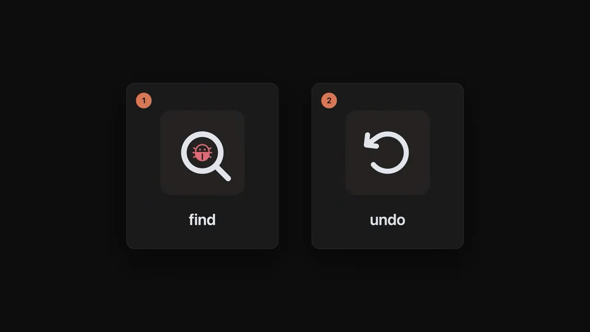
찾기: 처음 쓰는 사람처럼 써 보게 하기
팀은 제품을 매일 직접 써서, 고객보다 먼저 문제를 찾는 경우가 많아요. 나도 새 기능을 고객처럼 직접 써 볼 수 있어요. 하지만 이미 동작을 알고 있어서 놓치는 게 생겨요. 그래서 앱이 만들어지는 걸 한 번도 본 적 없는 새 에이전트를 보내, 처음 온 고객처럼 실제 앱을 쓰게 해요.
프롬프트에서 강조된 두 곳이 핵심이에요. 서브에이전트를 띄워 '처음 쓰는 사람으로서' 앱을 쓰게 할 것, 그리고 앱 코드를 아예 읽지 못하게 막아 앱이 무엇인지 모르게 할 것이에요. 사람이 막힐 만한 곳을 모두 찾아야 하고, bash로 코드를 읽지 못하게 하는 훅도 만들어 달라고 해요.
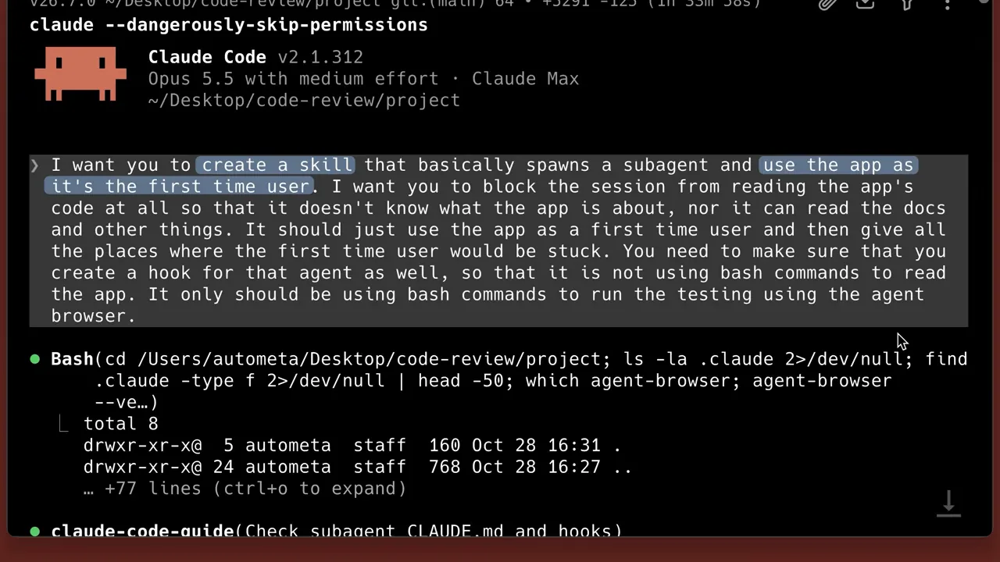
Claude는 first-time-user 스킬과, 스킬이 보낼 에이전트를 만들어요. 아래는 그 SKILL.md의 'What keeps the subagent blind' 부분이에요. 에이전트 정의에 omitClaudeMd: true를 넣어 CLAUDE.md, AGENTS.md, review.md를 읽지 않게 하고, first-time-user-guard.mjs 훅은 localhost 페이지에 대한 브라우저 명령만 통과시켜요.
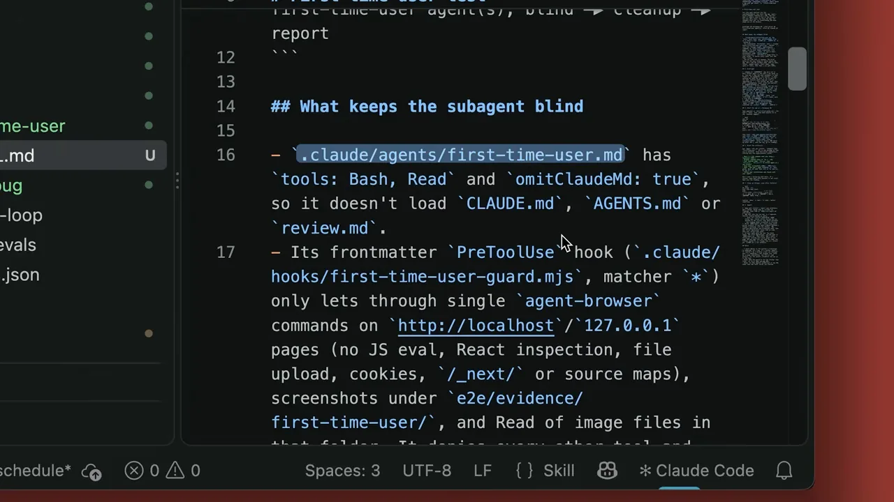
테스트에는 임시 데이터베이스를 줘서 실제 데이터를 건드리지 않아요. 실행은 스킬 명령에 확인할 기능을 붙이면 돼요. 화면에서는 /first-time-user review the rescheduling flow로 예약 변경 흐름을 맡겼어요. 스킬은 앱을 띄우고, 앱이 어떻게 만들어졌는지 모르는 에이전트를 시작한 뒤 끝날 때까지 기다려요.
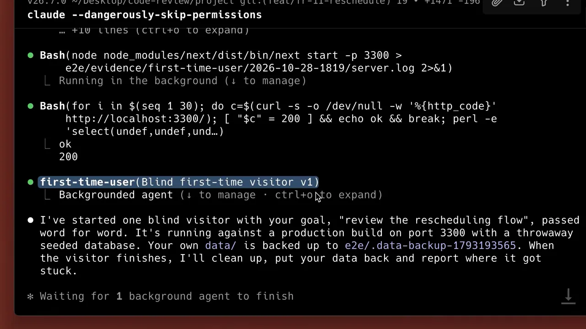
에이전트가 끝나면 스킬은 찾은 것을 모두 보고하고, 앱을 낫게 만들 수정안을 제안해요.
되돌리기: git과 fix-a-bug 스킬
찾기가 절반이고, 나머지 절반은 문제를 일으킨 변경을 되돌리는 거예요. 여기에 git을 써요. git은 앱의 모든 버전을 저장해요. 기능마다 프로젝트의 복사본인 브랜치를 따로 두면, 아래 그림처럼 my-app에서 checkout과 search가 각자 갈라져 나가요. 나중에 어떤 기능이 문제를 일으키면 그것만 git으로 되돌리면 돼요.
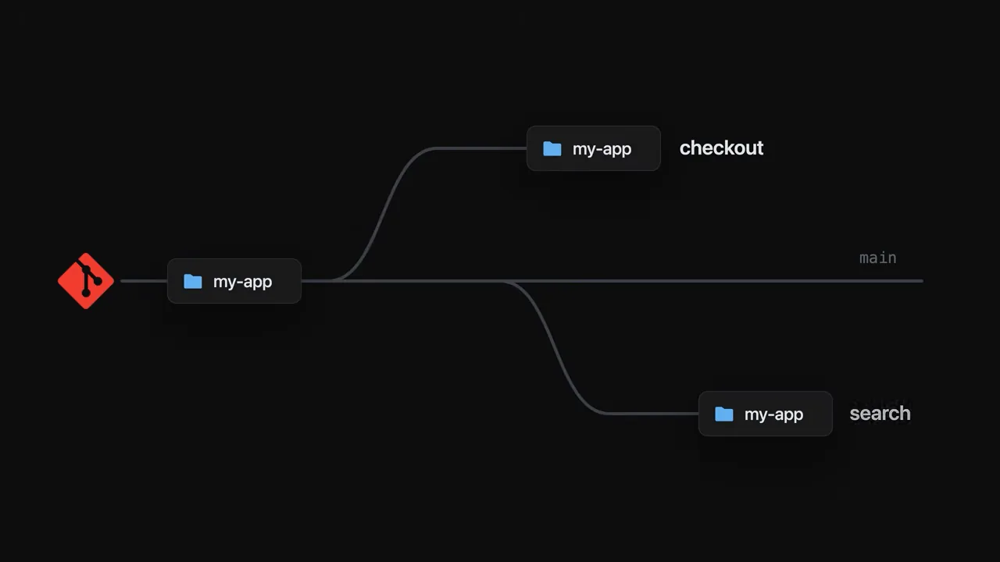
문제를 일으킨 변경을 찾아 되돌리려고 fix-a-bug 스킬을 만들어요. 기능이 기대대로 동작하지 않을 때 문제를 주면 원인과 고칠 방법을 찾아요. 프롬프트에서 강조된 부분처럼, 사용자가 말한 문제가 정말 맞는지부터 확인해요.
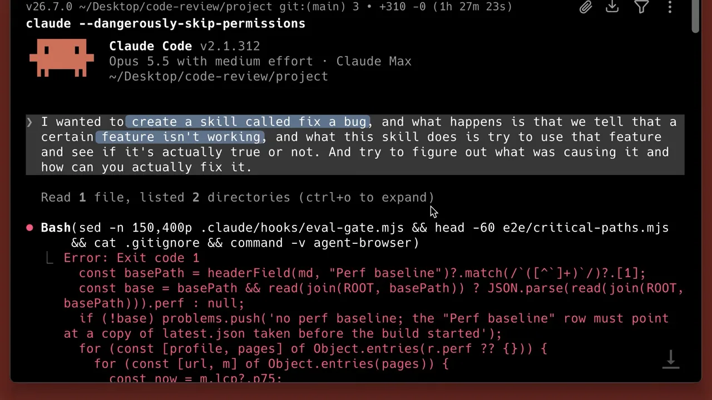
이 스킬이 제대로 돌려면 CLAUDE.md에 git을 쓰라고 적어 둬야 해요. 기능마다 브랜치를 만들고, 잘 되는 버전은 모두 저장하라고요. 화면의 'Git workflow' 절은 기능 브랜치에서 작게 자주 커밋하고, 빌드·린트·e2e 테스트와 브라우저 확인이 끝난 뒤에야 main에 합치라고 적혀 있어요.
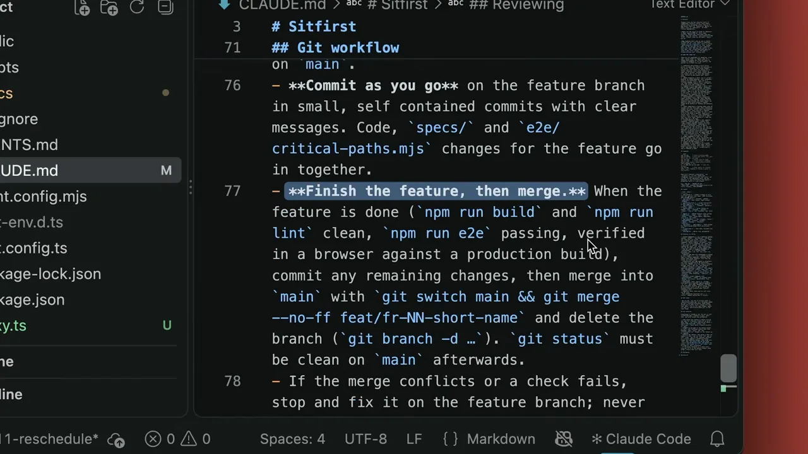
그러면 기능이 이상할 때 Claude가 저장된 버전을 거슬러 올라가요. 아래 타임라인에서 v4부터 빨간 표시가 생기고, 돋보기는 그 직전인 v3을 보고 있어요. 원인이 된 변경을 찾으면 그 앞 버전으로 되돌려요.
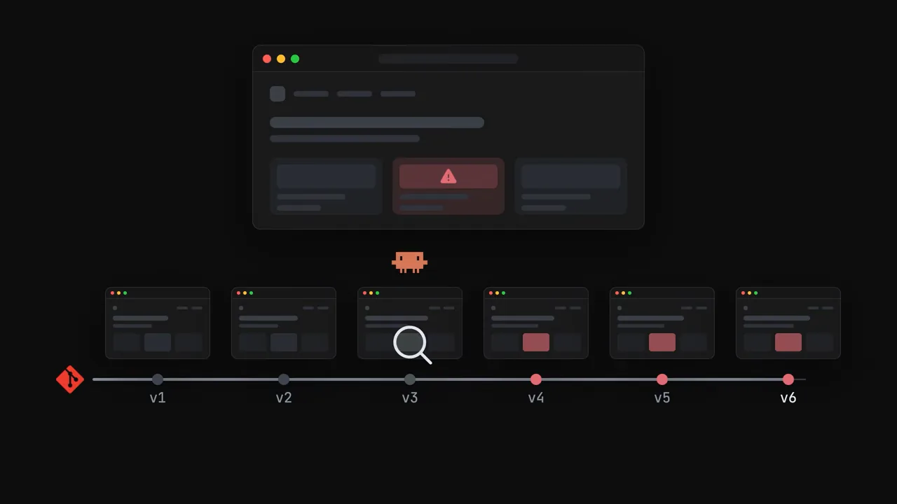
지금까지 나온 스킬 네 개를 한 표로 모으면 이래요.
| 스킬 | 언제 | 하는 일 |
|---|---|---|
write-evals | 새 기능을 만들기 전 | 요구사항 문서·eval·목업을 쓰고 사람 승인을 받아요. 위험 등급을 받아 엄격함을 정해요 |
review-loop | 승인된 기능을 만들 때 | 빌더·검증자·리뷰어를 라운드마다 새로 띄워 eval이 통과할 때까지 돌려요 |
first-time-user | 기능이 완성된 뒤 | 코드를 못 보는 에이전트가 처음 온 고객처럼 앱을 쓰고 막힌 곳을 보고해요 |
fix-a-bug | 문제가 드러났을 때 | 버그를 재현하고 원인을 확인한 뒤, 고치거나 git으로 되돌려요 |